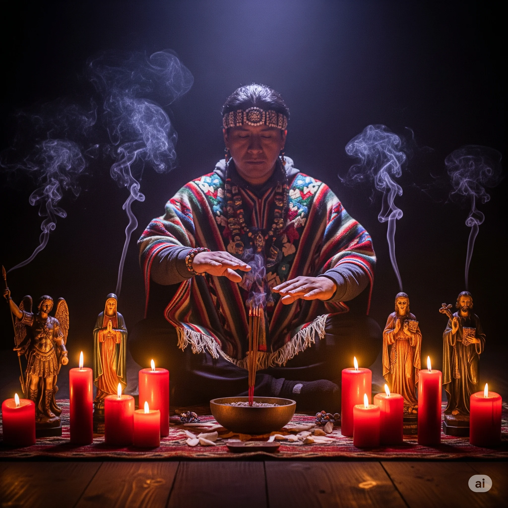
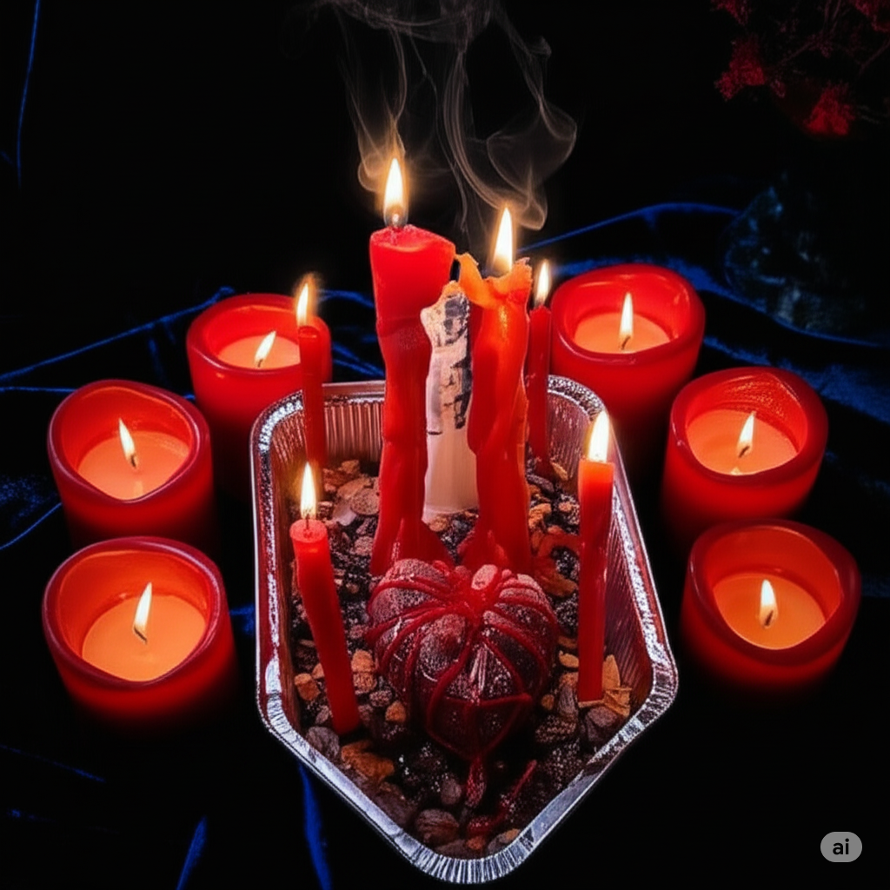
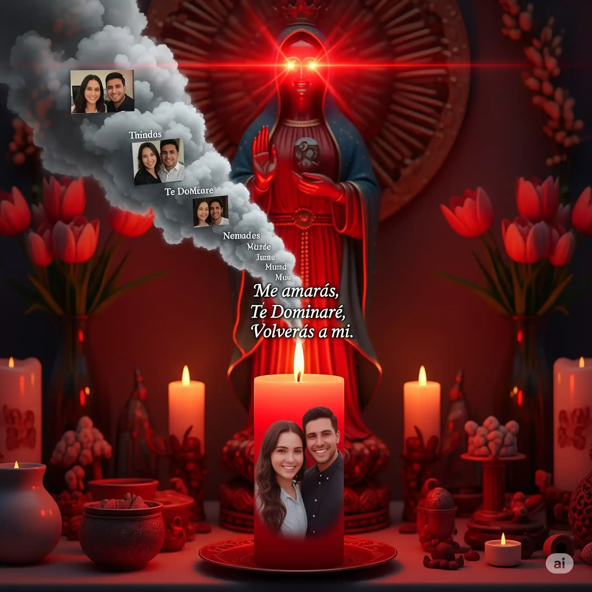
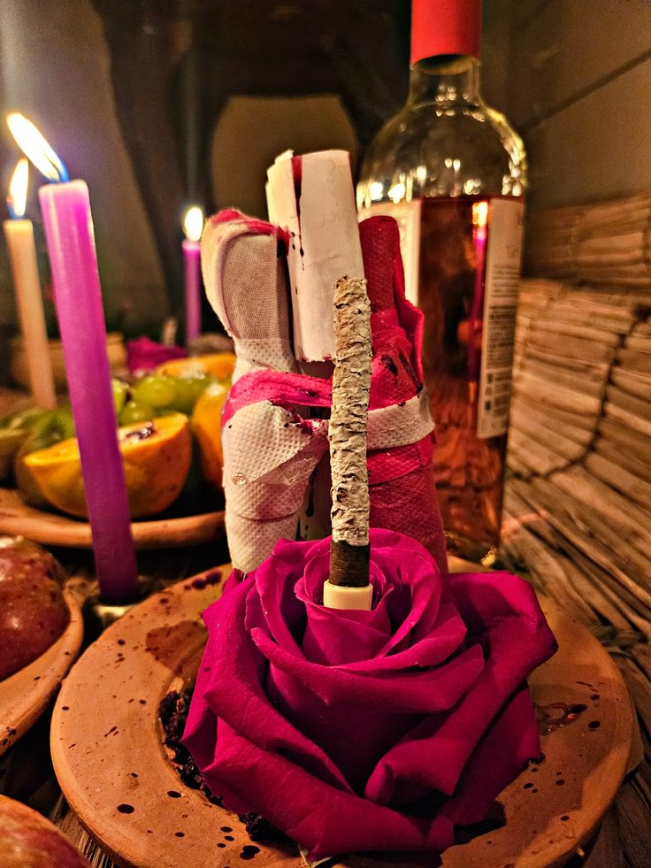
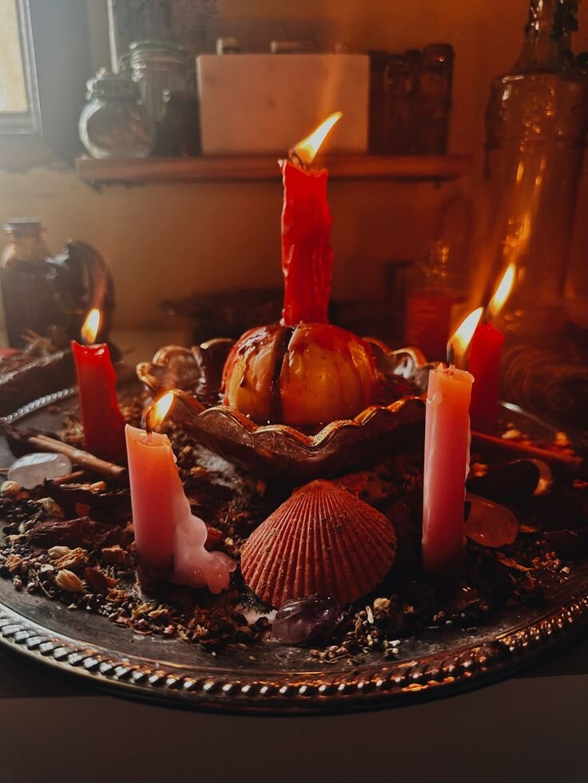
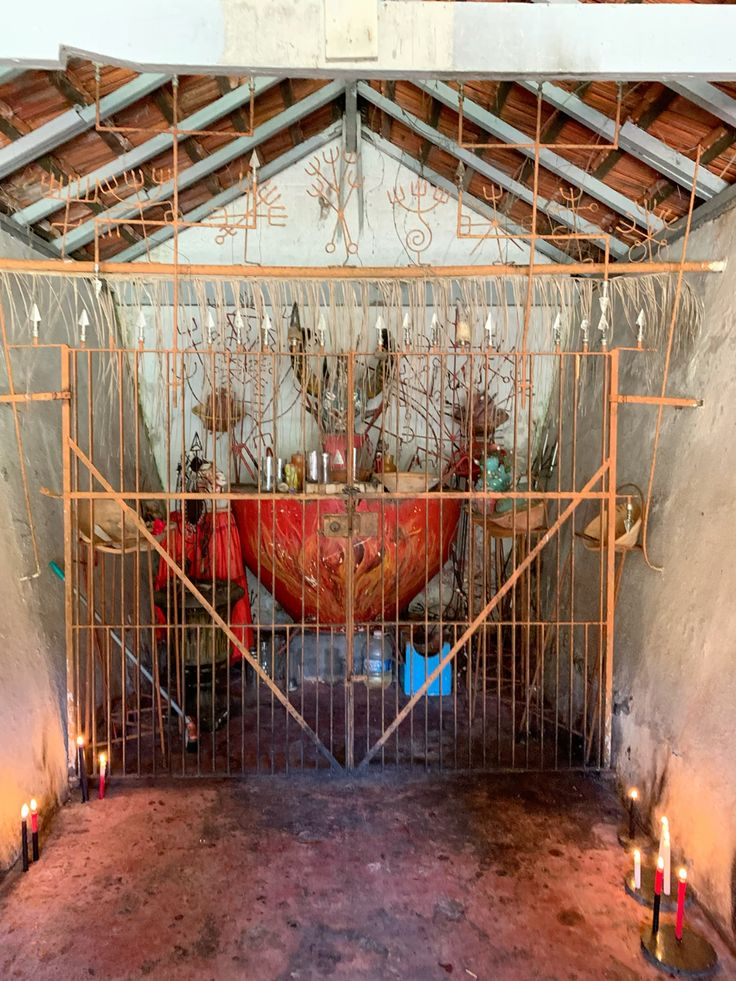

AMARRES DE AMOR CON TRADICIÓN ANCESTRAL
¿Necesitas los servicios de auténticos brujos en Catemaco y Veracruz? Nuestros maestros con tradición ancestral pueden ayudarte con amarres de amor efectivos y rituales poderosos. — Llamar ahoraConsulta con brujos de Catemaco ahora


Ritual ancestral de los brujos de Catemaco para fortalecer la unión y atraer a la persona amada con la auténtica magia veracruzana.

Técnica especializada de brujos en Veracruz para resultados inmediatos en el amor, utilizando la tradición mágica de Catemaco.

Ceremonia sagrada de brujos especializados en Catemaco para sellar vínculos eternos con la poderosa magia ancestral veracruzana.

Servicio tradicional de brujos en Veracruz para suavizar relaciones y atraer armonía con las técnicas ancestrales de Catemaco.
¿Problemas de amor? ¿Tu pareja se alejó? ¿Quieres recuperar a ese ser amado? Nuestros brujos expertos en Catemaco y Veracruz te ayudarán con la auténtica tradición mágica ancestral. Los brujos en Catemaco son reconocidos mundialmente por su efectividad en amarres de amor y hechizos poderosos. Consulta ahora mismo y recibe asesoramiento personalizado sin costo con maestros especializados de Veracruz. Garantizamos total discreción y resultados rápidos.
Los brujos en Catemaco, Veracruz mantienen viva una tradición que se remonta a las culturas prehispánicas. La magia ancestral de Catemaco ha sido transmitida de generación en generación, convirtiendo a esta región en el centro espiritual más importante de México.
Los brujos en Veracruz, especialmente los de Catemaco, son reconocidos mundialmente por la efectividad de sus amarres de amor y rituales. Miles de personas han encontrado solución a sus problemas amorosos con la auténtica brujería veracruzana.
Nuestros maestros brujos de Catemaco combinan conocimientos ancestrales con técnicas modernas para ofrecer amarres de amor, hechizos de atracción y rituales de unión con resultados comprobados y duraderos.
El proceso suele durar entre 7 y 21 días, dependiendo de la situación y la energía de la pareja.
(Secretos y únicos, seleccionados especialmente para tu caso por el maestro y los ministros.)
Durante todo el proceso tendrás acompañamiento y supervisión personalizada para asegurar los mejores resultados.
“Varios miembros de mi familia estaban distanciados y con muchos conflictos. Gracias al amarre tradicional, hoy reina la armonía y el amor en nuestro hogar. ¡Eternamente agradecida!” Att: JM
"Luché mucho tiempo con problemas de mi pareja y el alcohol, ahora con este amarre me hace caso y dejó el alcohol y otras drogas. Nuestra relación es más fuerte y feliz que nunca." Att: SG
"Gracias maestro Isaias y los ministros y maestros por brindarme las herramientas para que mi pareja ahora esté solo conmigo. Siento paz y seguridad en mi relación." Att: AC
"No creía en estos trabajos, pero después de intentarlo todo, el amarre fue mi última esperanza. Hoy mi pareja volvió, es más cariñosa y atenta. ¡Mil gracias!" Att: ML
Resultados visibles en 3 a 7 días, dependiendo de la energía y disposición de la persona objetivo.
Elementos rituales consagrados, esencias y velas especiales, preparados exclusivamente para tu caso.
Seguimiento diario y guía personalizada para potenciar los resultados y resolver cualquier duda.
"En solo 4 días, la persona que me gustaba me buscó y ahora estamos saliendo. ¡No lo podía creer!" Att: LP
"Sentí un cambio en mi energía, la gente me mira diferente y me siento más seguro. Gracias por el apoyo y la magia." Att: CR
"Después de meses de indiferencia, mi ex volvió a escribirme y ahora estamos mejor que nunca. ¡Mil gracias!" Att: YV
El ritual se realiza en 2 fases, con resultados que se consolidan en 14 a 30 días.
Amuletos consagrados, velas de unión, aceites y elementos rituales exclusivos para la pareja.
Asesoría continua y rituales de refuerzo según la evolución de la pareja.
"Después de años de altibajos, nuestro matrimonio se ha fortalecido y ahora sentimos una conexión única. El ritual fue la mejor decisión." Att: MR
"Mi pareja y yo superamos una crisis muy fuerte. Ahora estamos más unidos y felices. ¡Gracias por la guía y el apoyo!" Att: EV
"Sentí la protección y la energía desde el primer día. Recomiendo este ritual a quienes buscan estabilidad y amor verdadero." Att: DS
El endulzamiento actúa en 5 a 10 días, con efectos que se sienten progresivamente.
Miel, esencias florales, velas y elementos rituales personalizados según el caso.
Seguimiento cercano y consejos para mantener la armonía lograda.
"Mi familia estaba llena de discusiones, pero después del endulzamiento todo fluyó mejor y ahora reina la paz en casa." Att: FR
"Mi pareja y yo no parábamos de pelear. El endulzamiento nos ayudó a escucharnos y a recuperar la dulzura de antes." Att: YS
"Recomiendo este servicio a quienes buscan armonía y reconciliación. ¡Funciona de verdad!" Att: MC

Contamos con consultorios especializados donde nuestros brujos de Catemaco y Veracruz ofrecen servicios de amarres de amor y hechizos con la auténtica tradición ancestral mexicana. Puedes visitarnos en persona para una consulta privada con maestros especializados en la magia veracruzana, o agendar una videollamada para atención a distancia. Garantizamos total discreción y resultados rápidos con la verdadera brujería de Catemaco.